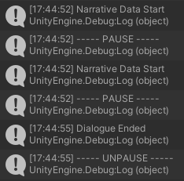
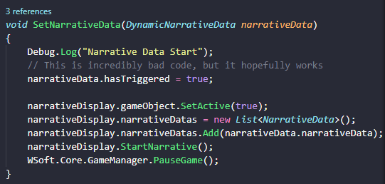
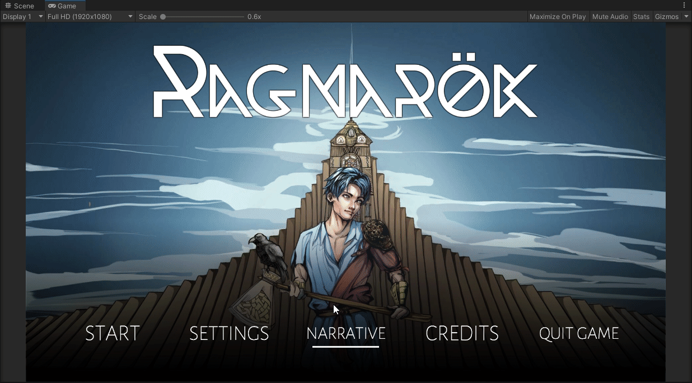
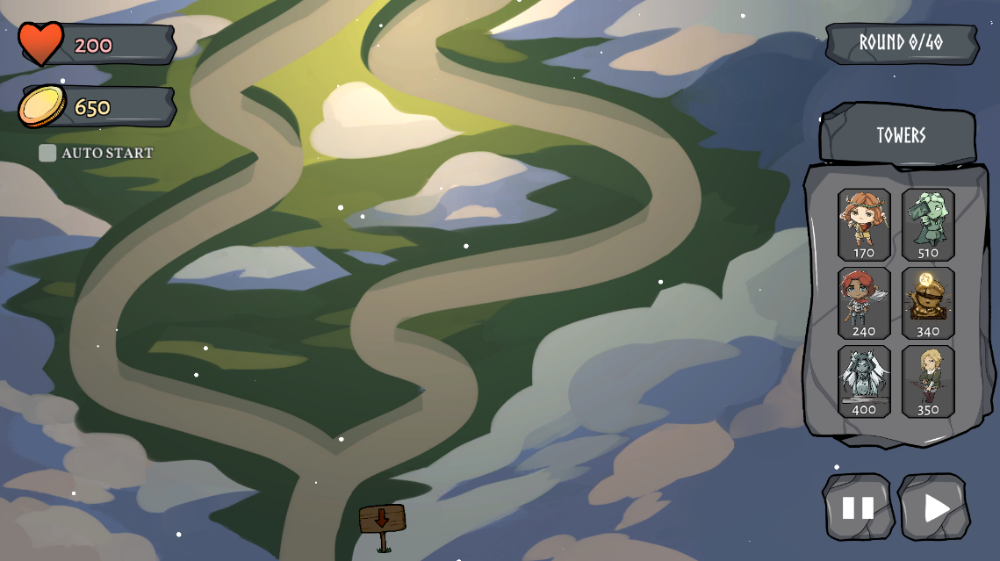
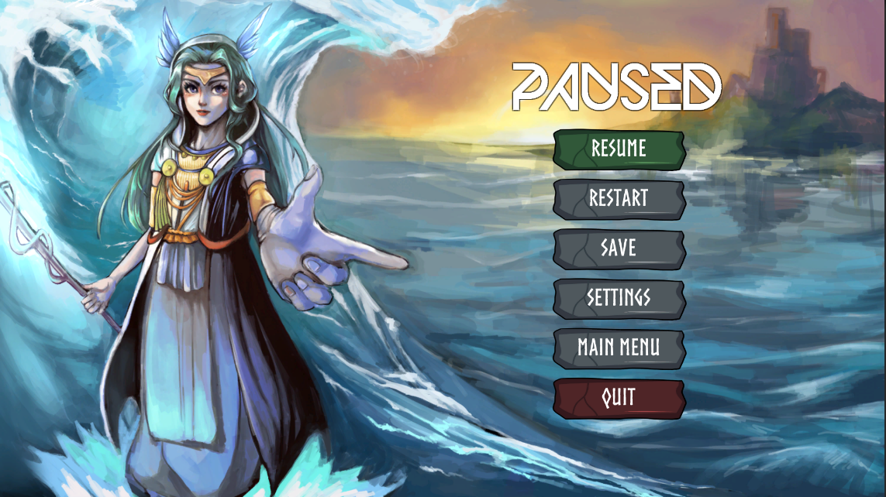
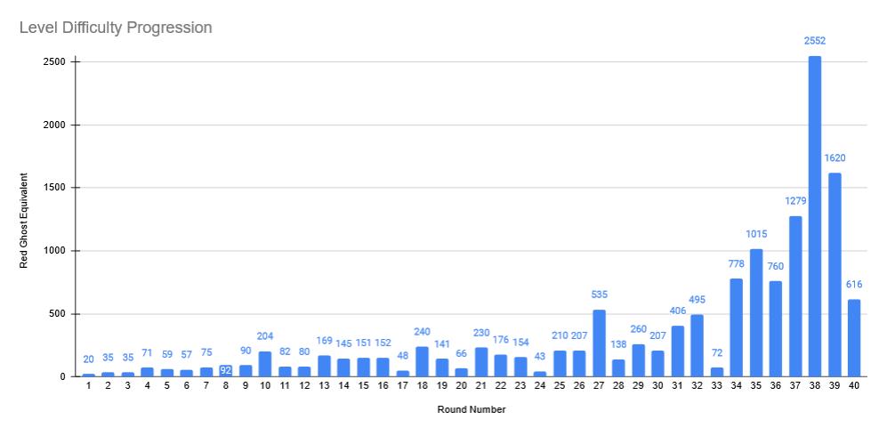
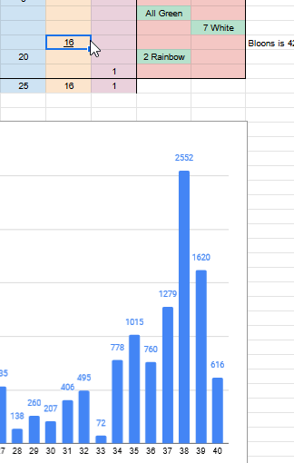
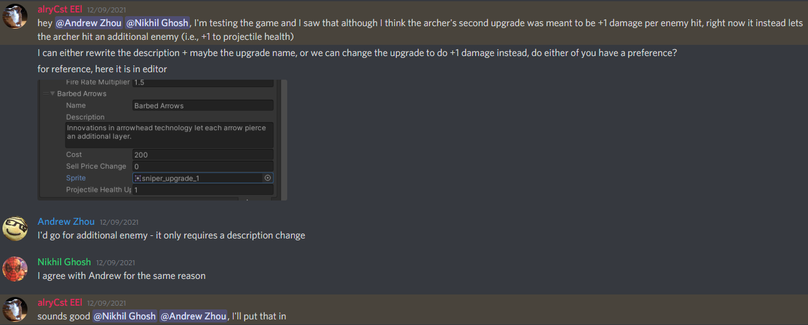

Gold
Nov 29 to Dec 10 - Making the Game Actually Work
Final sprint! A lot of effort and work this week went into making sure the game was finalized and uh... fully functional, surprisingly. Before this sprint we had actually never been able to play through the entire game - let alone an entire level - to completion, so I was tasked with fixing that. Along with that came balancing fixes, UX improvements, and overall polish in the final two weeks of our game.
A lot of programming work this week, and a lot of implementation minutiae as well. Given much of my actual "design" work was largely completed for this sprint, I helped out a lot with bug-fixing and minor implementation things all throughout the game. In short, I basically acted as an extra set of hands for the many tiny things we needed to fix before releasing the game.
Of course, that doesn't mean that all of it was easy, of course. One of the tasks I was assigned in this sprint was actually a game-critical bugfix: In many cases, there would be a softlock that could occur around round 24 of gameplay. In that, some action in that round left the game in a state where the round would activate, but no enemies would show up, effectively softlocking the game. In short, because of this softlock, nobody had ever fully completed our game - a pretty critical bug, if I say so myself. After some code detective work on my part, I managed to localize the fault to code related to the in-game narrative box, and how it paused the game while it was active.
Notably, as seen in my debug logging statements above, the error would always occur when the game paused multiple times due to the activation of a narrative scene. The responsible code blocks are below:
This function, SetNarrativeData(), was called whenever an in-game narrative box occurred. This would read in a set of narrative data from a scriptable object and display that for the player. As you can see, the creator of the function (not me, to clarify!) noted how it was specifically "incredibly bad code". There's a lot in this function, but the only actually relevant part is the WSoft.Core.GameManager.PauseGame() function at the end. This line activated the PauseGame() function below, which you can see pauses the game by adjusting the timescale of the game. It initially sets a variable called currentTimeScale to store the timescale before pausing, and then sets the timescale to 0. Later, when unpausing, it sets the timescale to the previously set currentTimeScale.
And it is with these functions - the pause and unpause functions - that one can see where our softlock comes from. The situation plays out as thus:
SetNarrativeData() is invoked, the game pauses as a result of a narrative box opening.currentTimeScale is set to Time.timeScale.Time.timeScale = 0. Remember this for later.SetNarrativeData() is invoked again, the game pauses again.currentTimeScale is set to Time.timeScale. But remember, Time.timeScale = 0. So currentTimeScale = 0.Time.timeScale = currentTimeScale. However, currentTimeScale = 0. So Time.timeScale = 0.Now, I never managed to actually find what caused the repeat pauses, but I highly suspected that it was likely due to a timing/concurrency issue that would take far too much effort to discover or patch - I was doing this about a week before we needed to ship the game, remember! So instead of finding the more root cause of the bug, I instead took a more direct preventative measure - avoiding the ability to double pause at all. This managed to prevent the softlock, and finally let us be able to play all 40 rounds of a game consistently.
Another major feature that I helped to bring to reality was the "narrative menu". As per a request from one of Crystal, one of our audio designers/writers, we wanted an ability for players to be able to see both the opening and ending narrative scenes. While maybe not the most critical or sensible game design decision, for our case it was a very crucial feature to implement: Remember, ultimately the purpose of games for the WolverineSoft Studio is not to actually create the best games, but to create games that allow each member to gain useful and important experience, and also to have a polished portfolio piece that our members can use for the future. This is why this feature was so important to implement - our artists, our writers, and our audio engineers spent a significant amount of time and effort in these cutscenes, but given how long the game takes, very few people will ever see the final cutscene, especially employers. Thus, if one were to try and show off their work on the final cutscene of the game, they'd probably want a better way to do so than playing through 40 rounds of tower defense... three times over. So to make it easier for those folks to be able to show off their work on that cutscene to future employers, I created this quick feature to allow them to do that from the main screen.
This week, I also engaged in a couple of small UX and UI fixes. In the first image below, I added a small sign on the map to help indicate to players which way the enemies would travel through the map, in reponse to multiple playtesters often getting confused since there was no previous visual indication. In teh second photo, I made some small tweaks and adjustments to the pause menu to bring it into style with the rest of the game.
 I also spent a significant amount of time playing through the game myself, to see how balanced it was. Suprise, suprise - it wasn't.
A significant amount of effort was put in over the last two weeks to balance the game to smooth out the difficulty curve for players. During playtesting, both external and internal, we noticed that players found the end-game far too difficult than previous levels. Of course - difficulty is a subjective term, so I looked for ways to quantify that "level" of difficulty for each wave of enemies. This was done with a metric borrowed from Bloons TD6 - the "equivalent red" count. As a short explainer, the red enemy is the base, weakest unit - it takes one projectile/attack from a tower to kill. All enemies following the red enemy are just different variations with more health or different features. For example, pink ghosts in our game take 5 shots to kill; as a result, they have a equivalent red ghost count of 5. This metric - Red Ghost Equivalent (or RGE) - is how I decided to measure a round's difficulty. In practice, RGE meausres how many projectiles need to be fired in order to win a round - the higher the RGE, the more difficult the round, since it implies one would need either more towers or more powerful towers to accomplish.
After calculating the RGE for all ghosts in the game, and then figuring out how many ghosts spaawned in each round, I could calculate the RGE of each of the rounds - the initial difficulty curve is below:
Look at that spike in round 38! The RGE of that round is almost double that of the last round! And remember what RGE represents - we are essentially asking the player to double their defensive capability in ONE ROUND. Coincidentially, this difficulty spike seems to coincide with our findings from playtesting - people would be progressing just fine before completely dying in the late 30s. The result ultimately ended up being the fact that round 38 in our game ended up deviating heavily from that of Bloons TD6, with 14 more high-level, high-difficulty enemies than what Bloons TD6 had. Removing those dropped the RGE by about 1500 alone, and made Round 38 playable once again.
I was also active in many small discussions about rebalancing in the team's Discord server.
Nothing too exciting here - just regular weekly meetings with the rest of the team.
This week, we saw two industry playtesters come in and play through the game - I was present for both, and made sure to get as much information out of both of them that I could.